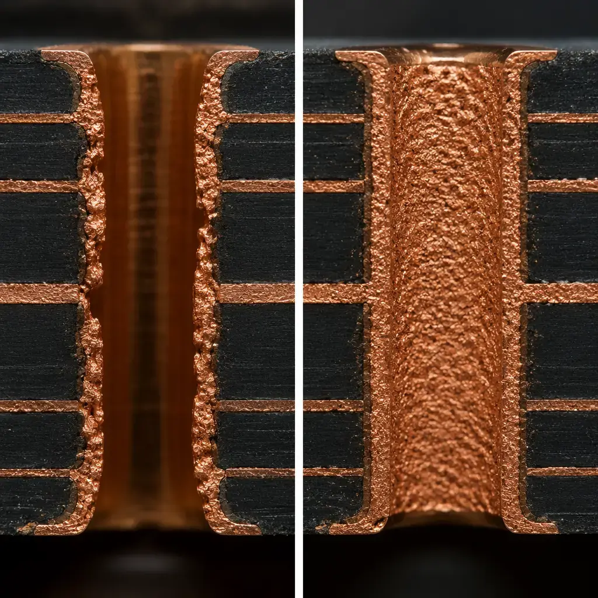
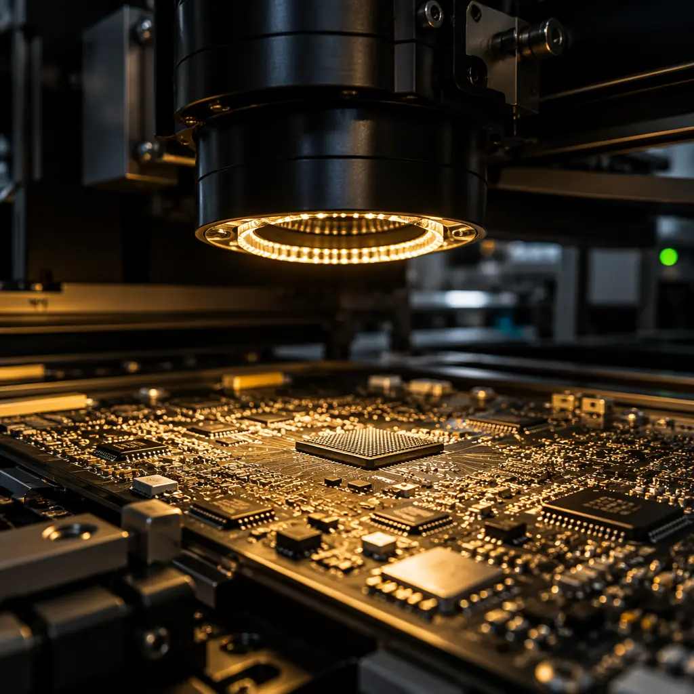
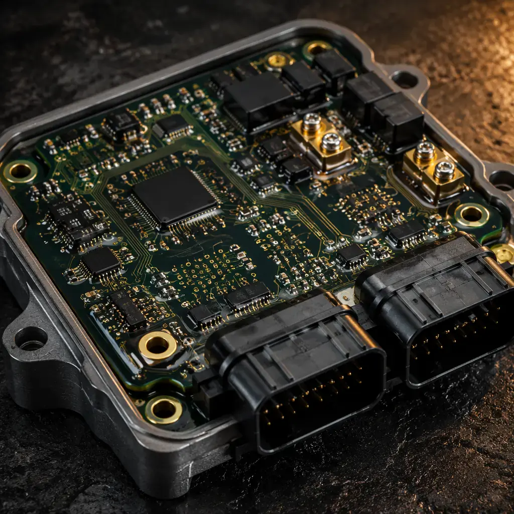

Every PCB procurement specification eventually reaches the question: Class 2 or Class 3? The answer determines your inspection criteria, your acceptable defect rate, your manufacturing cost, and — most importantly — whether your product will survive its intended operating environment. Choose wrong, and you're either paying a premium for inspection rigor you don't need, or shipping boards that will fail in the field at a cost far higher than the manufacturing savings.
This guide explains the difference between IPC Class 2 and Class 3 at the level that matters: not the textbook definitions, but what changes on your factory floor, on your BOM cost, and in your field reliability. Written from the perspective of a Shenzhen manufacturer that runs both Class 2 and Class 3 lines daily — automotive PCBs on one side, industrial control boards on the other.
Quick answer: If your product failure could directly cause human injury or death, you need Class 3. If downtime costs more than $10,000 per hour, you want Class 3. For everything else — consumer devices, office equipment, general industrial controls — Class 2 is the standard, and specifying Class 3 is likely over-engineering your procurement requirements.
What IPC Class 2 and Class 3 Actually Mean
IPC-A-610 is the globally recognized standard for electronic assembly acceptability. It defines three classes of electronic products, each with progressively tighter acceptance criteria:
- Class 1 — General Electronic Products: The product must function. Cosmetic defects are acceptable. Used in disposable consumer items like toys and basic remote controls.
- Class 2 — Dedicated Service Electronic Products: The product must provide continued performance and extended life. Uninterrupted service is desired but not critical. This is the default for most commercial and industrial electronics — servers, telecom equipment, non-critical instrumentation.
- Class 3 — High Performance/Harsh Environment Electronic Products: Continued performance or performance-on-demand is critical. Equipment downtime cannot be tolerated. End-use environments may be uncommonly harsh. The product must function when required — such as life-support systems, flight controls, and automotive safety systems.
The critical distinction rarely stated in procurement guides: Class 3 is not just a stricter version of Class 2. The inspection philosophy changes at a fundamental level. Class 2 accepts that some defects exist — the question is whether they're acceptable within defined criteria. Class 3 assumes that any detectable defect is potentially unacceptable until proven otherwise, and the burden of proof shifts to the manufacturer.
Where the Standards Come From
IPC-A-610 works alongside IPC J-STD-001 (soldering requirements) and IPC-6012 (rigid PCB qualification). A Class 3 assembly requires both Class 3 soldering and a Class 3 bare board. You cannot build a Class 3 assembly on a Class 2 PCB — the laminate and plating requirements are different, particularly around barrel fill, annular ring, and dielectric spacing.

The 5 Inspection Criteria Where Class 2 and Class 3 Diverge
IPC-A-610 runs approximately 400 pages. Most of its criteria are identical between Class 2 and Class 3. The differences cluster in five areas that directly affect manufacturing yield and cost:
| Criteria | Class 2 | Class 3 |
|---|---|---|
| Solder joint barrel fill (PTH) | 50% minimum | 75% minimum |
| Annular ring breakout | 90° breakout allowed if min. lateral spacing maintained | No breakout allowed on external layers |
| Solder voiding (BGA/area array) | ≤25% of joint area | ≤15% of joint area |
| Solder fillet (gull-wing leads) | Wetting to 50% of lead height | Wetting to 75% of lead height |
| Cleanliness / flux residue | Permitted unless impedes inspection | No visible residue on any surface |
These five criteria account for approximately 80% of the yield difference between Class 2 and Class 3 production. The barrel fill requirement alone — going from 50% to 75% — forces changes to preheat profiles, wave solder parameters, and flux chemistry. The annular ring requirement eliminates the most common yield-loss pattern in high-layer-count boards: drill wander at the internal layers.
Manufacturing reality: A board that passes Class 2 inspection with 95% first-pass yield might achieve 82-88% under Class 3 criteria on the same line. The difference is not the equipment — it's the process window. Class 3 forces tighter control on every variable: preheat ramp rate, solder temperature band, dwell time, and cooling profile. At Huaxing, Class 3 lines run dedicated thermal profiles validated per product, not a single "one size fits all" reflow recipe.
The Cost Difference: What Class 3 Actually Adds to Your BOM

Class 3 typically adds 15–35% to per-board assembly cost, but the cost is not evenly distributed. Here's where the money goes:
Inspection Labor (40% of the premium)
Class 3 requires 100% inspection on criteria that Class 2 samples at statistical confidence levels. Every solder joint, every plated through-hole, every BGA via X-ray — not a statistical sample. The inspection time per board increases by a factor of 2-4x depending on component density. For a 300-component board, Class 2 might require 8-12 minutes of AOI + visual inspection. Class 3 pushes that to 20-40 minutes.
Yield Loss and Rework (30% of the premium)
Boards that would ship under Class 2 get reworked or scrapped under Class 3. The 50-75% barrel fill difference alone eliminates roughly 5-8% of production from first-pass acceptance, depending on board thickness and aspect ratio. Rework labor on a high-density board with 0201 components and 0.4mm pitch BGAs is expensive — sometimes exceeding the original assembly cost for the affected components.
Material Requirements (20% of the premium)
Class 3 bare boards cost more because IPC-6012 Class 3 imposes tighter requirements on dielectric spacing, copper thickness uniformity, and plating integrity. A heavy copper PCB or controlled-impedance board under Class 3 requires premium laminate grades that add $3-8 per square foot versus Class 2 grades, simply because the material must survive more aggressive thermal cycling validation.
Documentation and Traceability (10% of the premium)
Class 3 requires full lot traceability — every board must be traceable back to its bare PCB lot, its component reels, its reflow profile data, and its inspection records. This documentation package is often the deliverable that matters most to medical and aerospace customers, because it supports their own regulatory submissions.
When Class 3 Is Mandatory — And When It's Wasteful

The decision framework is simpler than most procurement teams believe:
Will a board failure directly threaten human safety?
If yes → Class 3, no exceptions. This covers medical device PCBs in life-sustaining equipment, aerospace flight controls, automotive ADAS and braking systems, and implantable medical devices. Regulatory bodies (FDA, FAA, NHTSA) effectively mandate Class 3 through their design assurance requirements.
Is system downtime cost measured in thousands of dollars per hour?
If yes → Class 3 is the right economic choice even without regulation. Telecom infrastructure, data center power distribution, continuous-process industrial control (PLC and servo drives), and solar inverter / energy storage systems all fall into this category. The Class 3 premium amortizes to pennies per operating hour over a 10-year service life.
Will the product operate in uncommonly harsh environments?
If yes → Class 3 is strongly recommended. This includes boards exposed to thermal cycling beyond -40°C to +85°C, continuous vibration (engine-mounted, vehicle-borne), high humidity with condensation, and corrosive atmospheres. Aerospace and defense PCBs face combinations of all four.
Is this a consumer or general commercial product?
If yes → Class 2 is almost certainly sufficient. Smartphones, laptops, home appliances, consumer electronics, office equipment, and most general industrial products are built to Class 2. Samsung and Apple ship billions of Class 2 boards annually with field failure rates below 0.1%. The yield and cost advantage of Class 2 at scale is enormous.
Common mistake: Procurement teams sometimes specify "Class 3" because it sounds like "best quality." If your product doesn't meet criteria 1-3 above, this decision is purely adding cost without adding value. A well-executed Class 2 process at a facility with 98.7% first-pass yield and three-stage quality gates (IQC → IPQC → OQC) will deliver reliability indistinguishable from Class 3 for commercial environments. Don't pay for inspection rigor you don't need — invest in comprehensive testing instead.
How to Verify Your Manufacturer's Class 3 Capability
Claiming Class 3 capability is easy. Demonstrating it is a different matter. Here's how to verify — without relying on the manufacturer's own assertions:
Ask for IPC QML (Qualified Manufacturers Listing) certification
IPC maintains a publicly searchable database of facilities that have passed third-party audits for Class 3 manufacturing. If the manufacturer isn't IPC QML listed, their Class 3 claim is self-declared — which doesn't mean it's false, but it hasn't been independently verified. Check the IPC Validation Services portal.
Request first-pass yield data specifically for Class 3 production
Class 3 yield should be reported separately from Class 2 yield. A manufacturer running predominantly Class 2 might report 97% overall yield but only 84% on their Class 3 line — and that 84% is the number that matters for your boards. If they can't separate the data, they can't control the process.
Verify X-ray inspection is on-site and used for 100% of Class 3 production
BGA voiding limits (15% vs 25%) cannot be verified with AOI alone. A manufacturer without in-house X-ray is either shipping assemblies without verifying one of the five critical Class 3 criteria, or outsourcing inspection — which breaks the traceability chain. At Huaxing, X-ray is integrated into the Class 3 production flow, not a separate off-line step.
Check whether their IATF 16949 certification covers the same facility
IATF 16949 (automotive quality management) requires the systems and documentation discipline that Class 3 demands — traceability, process control, nonconformance management, and corrective action. A facility holding both IATF 16949 and ISO 9001 typically has the quality infrastructure to deliver Class 3 consistently. Verify the certificate number against the IATF database.
Class 2 Done Right: When to Invest in Testing, Not Classification
For the majority of commercial products, the smart investment is Class 2 manufacturing with rigorous testing — not Class 3 classification. Here's the math:
A Class 2 board with 100% AOI + flying probe electrical test + X-ray sampling on every production batch catches virtually all latent defects that would cause early-life field failures. The testing cost adds 3-5% to assembly cost versus 15-35% for full Class 3. Over a 50,000-board production run, the savings fund an entire extra testing station — or a second-source qualification that provides more supply-chain resilience than tighter specs on a single supplier.
Procurement insight: The single most cost-effective quality investment is not Class 3 specification — it's requiring AOI on 100% of boards, X-ray on 100% of BGA/QFN joints, and flying probe or fixture test on 100% of electrical nets. These three requirements catch more real-world field failures than upgrading from Class 2 to Class 3 on a board that doesn't need the environmental margins. At Huaxing, this three-layer test protocol is standard on every production line regardless of class.
Bottom Line: A Decision Table for Your Next RFQ
| Your Product Type | Recommended Class | Key Reason |
|---|---|---|
| Implantable medical device | Class 3 | Safety-critical, FDA mandated |
| Automotive ECU / ADAS | Class 3 | Safety-critical, IATF 16949 required |
| Avionics / flight control | Class 3 | Safety-critical, DO-254/DO-160 |
| Telecom infrastructure (5G base station) | Class 3 | Downtime cost >$10K/hr, outdoor deployment |
| Medical diagnostic equipment | Class 3 | Patient outcome dependent, FDA Class II/III |
| Industrial PLC / servo drive | Class 2 (w/ full test) | Class 3 overkill; test coverage matters more |
| Energy storage BMS | Class 2 (w/ conformal coating) | Environmental protection > IPC class upgrade |
| Consumer IoT / smart home | Class 2 | Field replacement cost low |
| LED lighting driver | Class 2 | Cost-sensitive, failure non-critical |
| Server / data center motherboard | Class 2 | Redundancy built in at system level |
This table reflects how real procurement decisions are made — not by the textbook definitions of the IPC standards, but by the actual field consequences of a board failure. If your product straddles categories — an industrial device that's patient-adjacent but not life-sustaining, for example — default to Class 3 on the specific subassemblies where failure matters and Class 2 on the rest. Mixed-class assemblies are common and completely acceptable under IPC.